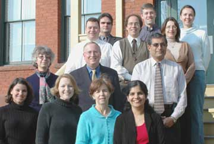
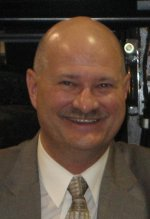
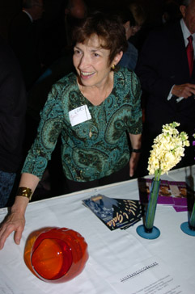
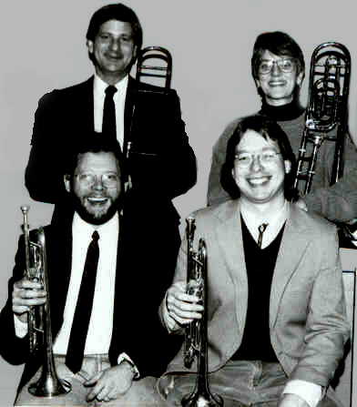

Well, Wogsland.org has finally made it to the top of Google's search results and to celebrate, I've compiled this list of random Wogslands I've found using websearches:

Chelsea Wogsland (front row, second from the left)- currently at University of Massachusetts Medical School

Dan Wogsland - former Democratic majority leader in the North Dakota Senate recently in the news.

Lori Wogsland

Tom Wogsland - Seen here (back left) with the rest of the Missoula Brass Quartet.
These are just a few of the thousands of links available about the few hundred Wogslands living in the US today. Who are these mysterious people? Hopefully one day we will find out...